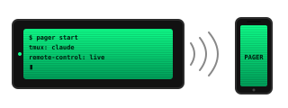

One-command install
Idempotent bootstrap.sh (Linux, apt) or macos/bootstrap.sh (macOS, brew). Prereqs, env, PATH, Claude Code trust flag, service or LaunchAgent, watchdog. Re-run anytime; only fixes what's missing.
Turn any always-on machine — Linux mini-PC, Mac mini, your daily MacBook —
into a Claude Code rig you carry in your pocket.
Background tmux + Claude Code's built-in --remote-control.
No SSH tunnel. No port forward. No relay you don't already trust.
curl -fsSL https://jawwadzafar.github.io/pager/install.sh | bash
One command. Detects your OS, clones to ~/.pager, runs the right bootstrap. Re-run to update.

curl -fsSL https://jawwadzafar.github.io/pager/install.sh | bash
One command. Detects Linux vs macOS, installs deps via apt or brew, wires the shell, registers the service or LaunchAgent. A tmux session named claude is already running claude --remote-control when it finishes.
pager url
# → https://claude.ai/code/session_01XXXXXXXXXXXXXX
pager url for the new link.
Idempotent bootstrap.sh (Linux, apt) or macos/bootstrap.sh (macOS, brew). Prereqs, env, PATH, Claude Code trust flag, service or LaunchAgent, watchdog. Re-run anytime; only fixes what's missing.
Native on both. Linux uses systemd --user with loginctl enable-linger for boot-time start. macOS uses LaunchAgents that start at login (Tahoe 26 / Sequoia 15, Apple Silicon and Intel both). Same single bin/pager binary either way — it detects the OS at runtime.
A user-level service brings the session back automatically. On Linux that's linger-enabled boot-time start; on macOS it's the login-time LaunchAgent. Your phone URL stays current either way.
A timer ticks every ~70s (pager-watch.timer on Linux, com.pager.watch LaunchAgent on macOS), logs session state to logs/watch.csv, and restarts a dead session automatically.
pager doctor walks the full install — deps, PATH shadowing, .env perms, trust flag, OS-aware service checks (systemctl or launchctl), watchdog freshness — with a fix hint on every failure.
pager start work spawns a second independent session with its own URL and log. Separate context, separate window on your phone.
Small actions/ + inventory.yaml layer lets the always-on Claude operate your fleet from inside the session. Credentials in .env, never echoed.
pager doctorRun after install, after a reboot, when something looks off. Exits non-zero if anything's broken, with a fix hint inline.
$ pager doctor pager doctor — /home/you/pager Dependencies ✓ tmux 3.6 ✓ claude 2.1.143 ✓ python3 3.14.4 Install & PATH ✓ 'pager' resolves to /home/you/.local/bin/pager → this repo Secrets ✓ .env perms 600 Claude Code workspace trust ✓ $HOME pre-trusted in ~/.claude.json (autostart safe) Services ✓ pager.service: active ✓ pager-watch.timer: active ✓ linger enabled (services start at boot) Watchdog state ✓ last watchdog tick 48s ago Sessions claude: 1 windows (created Mon May 18 21:10:02 2026) ✓ all checks passed
curl -fsSL https://jawwadzafar.github.io/pager/install.sh | bash
One command for both platforms. Detects Linux vs macOS, requires only git, clones the repo into ~/.pager, runs the right platform bootstrap. Idempotent — re-run any time to update.
apt box
Installs tmux, sshpass, python3-yaml via apt. Registers pager.service + pager-watch.timer. Enables linger so it starts at boot before any login.
Installs Homebrew (if missing), then brew install tmux libyaml python@3.13 + optional hudochenkov/sshpass. Registers com.pager.agent LaunchAgent. Starts at login. macOS notes →
Open a new shell (or source ~/.bashrc on Linux / source ~/.zprofile on macOS), then:
pager doctor # everything green?
pager url # phone URL
Open that URL on a phone signed into the same claude.ai account. Done.
$ git clone https://github.com/jawwadzafar/pager.git ~/.pager
$ cd ~/.pager
$ ./install.sh # same auto-detect
$ ./linux/bootstrap.sh # or, explicitly
$ ./macos/bootstrap.sh$ pager uninstall # stops the service/LaunchAgent, removes the symlink + shell-rc lines
$ rm -rf ~/.pager # optional: final wipe of the repo + logs + .env